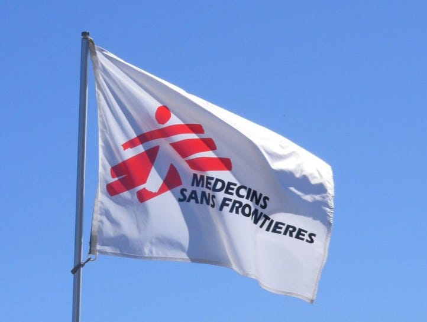
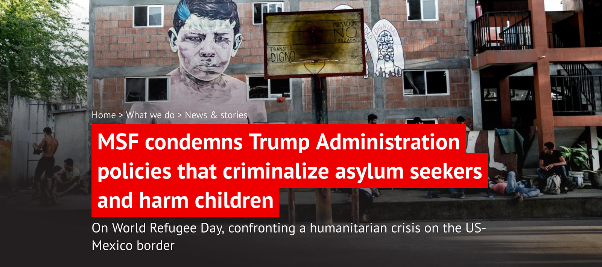
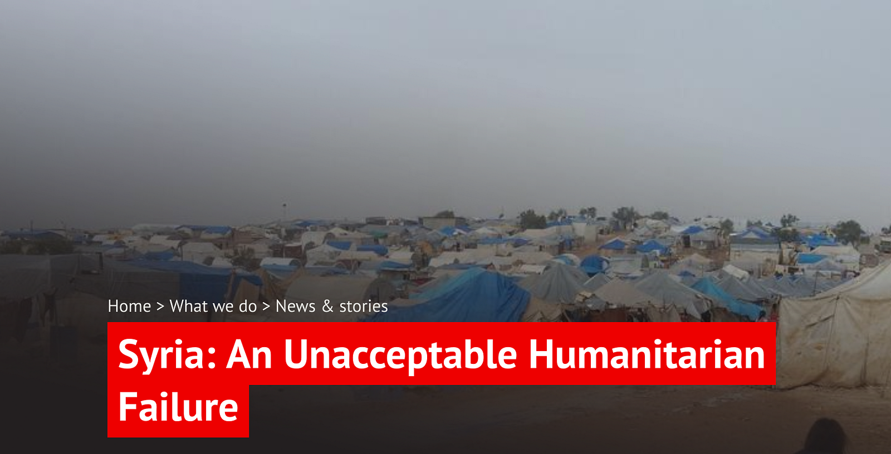
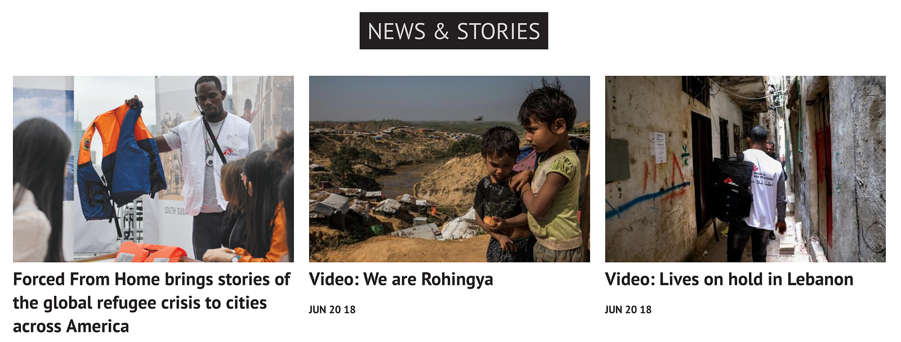
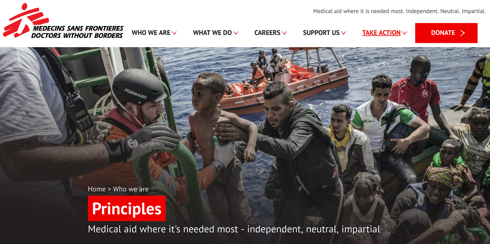

As the global public turns its awareness to displaced people on World Refugee Day, we are once again humbled by the opportunity to work with organizations that are committed to alleviating suffering and speaking up for human rights.

One such organization, Doctors Without Borders (aka Médecins Sans Frontières or MSF), recently celebrated the launch of a new website engineered by CivicActions. We were honored to help support MSF’s mission of providing independent, politically neutral aid to the people who need it most.
MSF uses its website as a vehicle to bear witness to the plight of vulnerable people and to bring public awareness to injustices and crimes against humanity.
MSF uses its website as a vehicle to bear witness to the plight of vulnerable people and to bring public awareness to injustices and crimes against humanity. The website also allows MSF to fundraise and recruit medical and non-medical staff for its field operations.

CiviActions was tasked with a Drupal 7 to Drupal 8 upgrade, along with building a new theme that would match and extend the design system being adopted by all of MSF’s sections around the world.
Early during Discovery, we identified an opportunity to make a better content creation and management experience by streamlining MSF’s content structure, moving from 40+ content types and taxonomy vocabularies in Drupal 7 to just ten in Drupal 8.
We identified a modular approach to highlight MSF’s rich storytelling, multimedia elements, and calls to action.
Using this synthesized set of content types as an elegant foundation, we designed a set of modular components (using the Drupal Paragraphs module) that can be added almost anywhere on the site. This modular approach ensures that MSF’s rich storytelling, multimedia elements, and calls to action can truly shine.

Behind the scenes, we employed Pattern Lab to build a sustainable and agile approach to the componentized front end. This helped keep us light on our feet to incorporate feedback from CMS user testing of the new content model.
We made it easier for MSF content creators to access and use the latest media provided by the organization’s documentary producers and photojournalists.
As part of the upgrade, our migration team moved thousands of articles and multimedia into the new content model, using the migration_tools built by CivicActions engineers. We also integrated MSF’s global media library so that content creators can access the latest from MSF’s international teams of documentary producers and photojournalists and import it directly into their authoring experience.

The launch of the new site last week was joyful, culminating in a virtual celebration between the MSF team and ours. But the sense of concern remains. With over 68.5 million forcibly displaced people around the world, there is an ever-increasing urgency to speak up and take action.
There is an ever-increasing urgency to speak up and take action.
This engagement taught us much about how MSF works daily toward this goal, and about the visionary, hands-on people who are dedicated to bringing the organization’s message to the public. It’s our privilege to work alongside folks who are not just clients, but friends and partners in the cause of ending human suffering.
Thanks to Kevin Walsh for substantial contributions to this story. ❤